Private production system
A 26-crate Rust workspace: real-time ingestion over Yellowstone Geyser gRPC, protocol decoders, Redis event fabric, TimescaleDB persistence, and a decision kernel that runs on the GPU and is the same code in backtest and live. One person designs it, writes it, operates it, and carries live capital on it. This page shows the interfaces and the development log. The source stays private.
One path from chain to execution. The optimizer closes the loop against the same kernel the live seat runs.
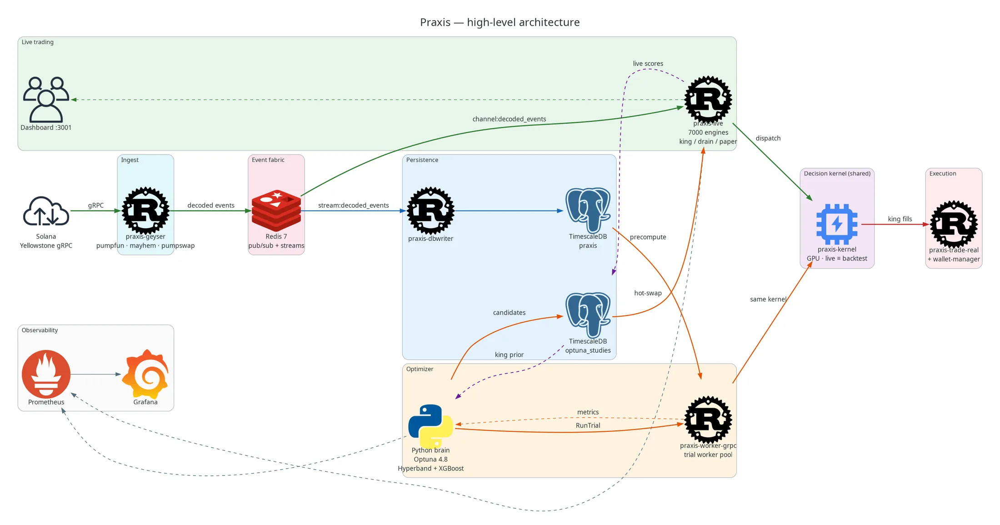
A ratatui front end written against the system's existing WebSocket and REST surfaces. Read-only, event-driven, no polling. Candles draw at eighth-block vertical resolution; windows are trade-anchored, so quiet spells never fabricate a bar.
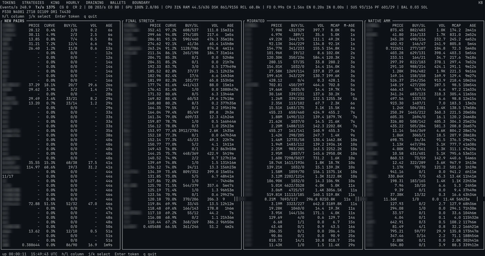
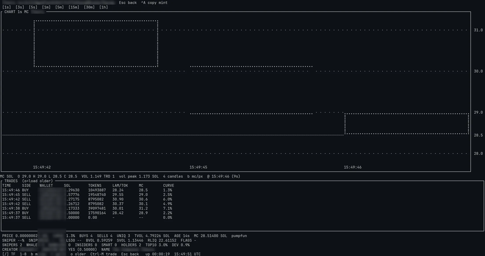
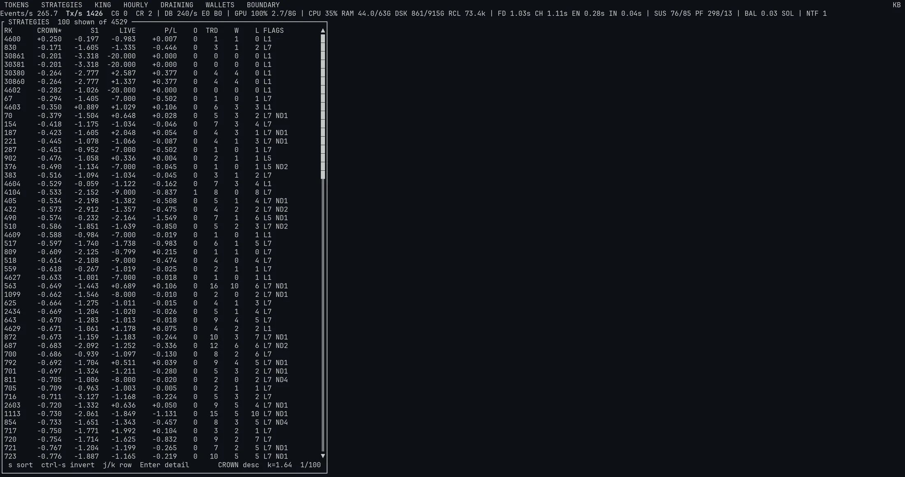
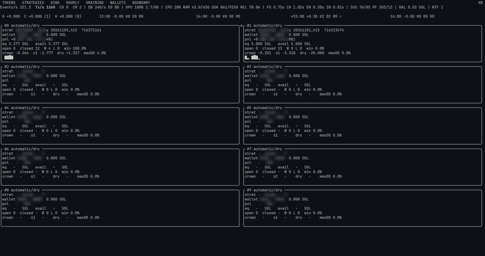
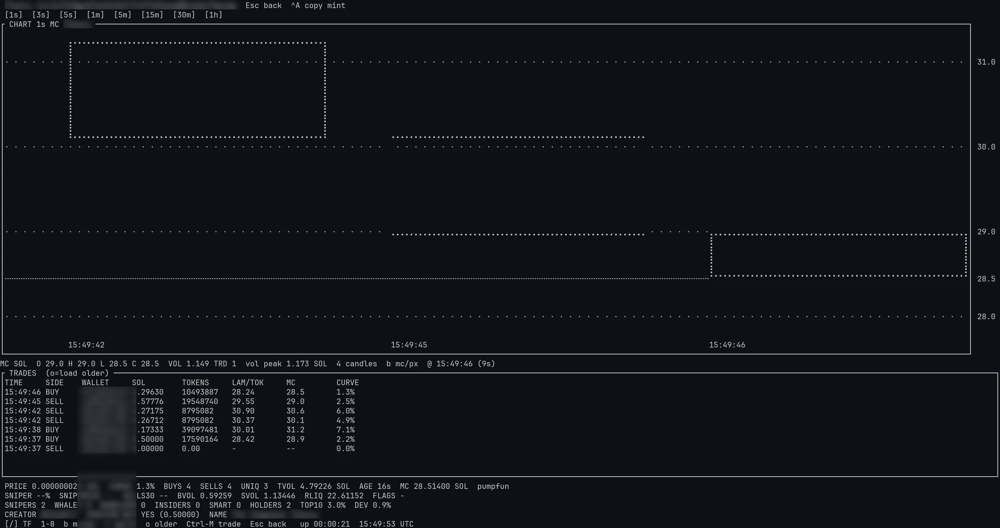
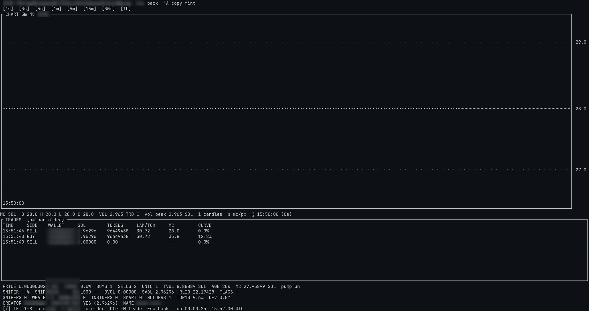
The browser front end the terminal client mirrors, plus the operator views around it: hourly strategy review, the study explorer, and GPU telemetry.
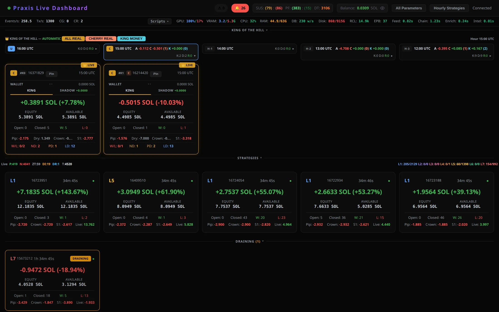
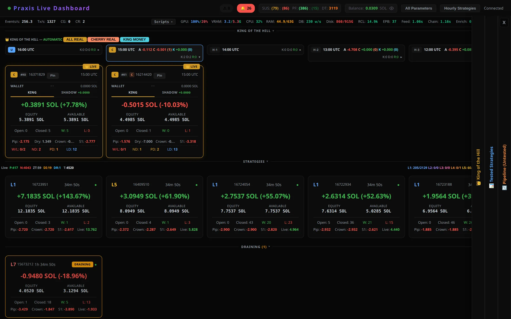
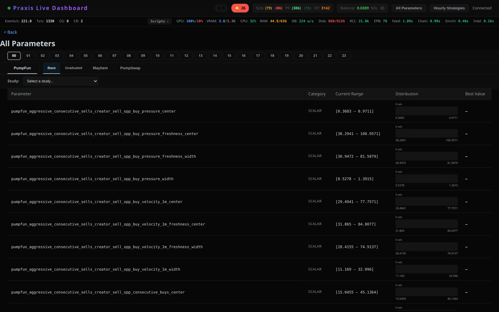
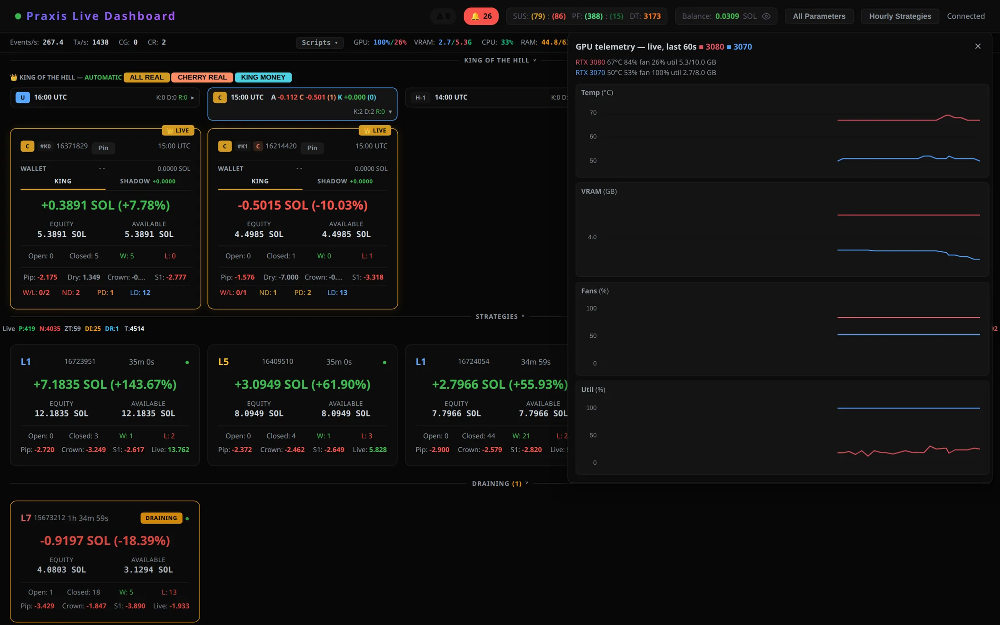
Condensed from the repository history and operating documents. Dates are month precision.
King strategy audited for go-live against recorded history. Parity testing between backtest and live becomes a standing practice, not a one-off.
Workspace test suite reaches 94/94 green. Grafana dashboards land. Geyser decode batching cuts ingest cost. The decision kernel moves to the GPU after walk-parity tests pass across the full archive, switched over atomically with a documented rollback. Optuna studies are wired to live survival data, and a second chain-latency watchdog gets a Redis-persisted trip budget.
The real-king execution batch lands with wallet-manager: real fills, rent recovery, self-healing provisional legs. The feed degrades overnight; the corruption guard freezes trading rather than act on stale data, and the system recovers on its own. A disk-exhaustion incident leads to retention and maintenance hardening. The cherry strategy and boundary alerts ship.
praxis-tui: a ratatui front end that speaks only the existing WebSocket and REST surfaces, adding eighth-block candlesticks and a trade-anchored chart model. Zero new production logic. King stop-simulation studies and another parity audit close the month.
The cherry tuner's publish step now re-stamps the serve path, so what was tuned is exactly what runs. Rank bands renumber above a doubled paper band. A position-persistor regression from a bad merge is found and reverted, and the promotion cap moves to configuration.